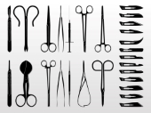

 WELCOME
Personal Skills for Health Care Workers
-
Work Ethic
Work ethic is a set of values based on hard work. There are many components of work ethic, including professionalism, punctuality, your overall attitude and behavior. Some businesses define work ethic as the belief in the moral benefit and importance of work and its inherent ability to strengthen character.
Because many health care fields require hours that go beyond your standard 9-to-5 job, it’s vital that future health care employees nurture a strong work ethic. Health care is a demanding field. The hours are long. The subject matter can be grim. Without the drive to succeed in your career, you may find it stagnates.
Stress Management
In health care, literally, lives could be at stake. That’s a lot of pressure to have to handle. According to studies, health care workers are at high risk of burnout if they do not have proper stress-management techniques.5 Burnout is the experience of long-term exhaustion and diminished interest in work.
The most successful health care workers not only know how to handle pressure, but they also thrive on it. But to avoid burnout it’s also important for health care workers to have good stress management practices and to know how to take space from their demanding careers.